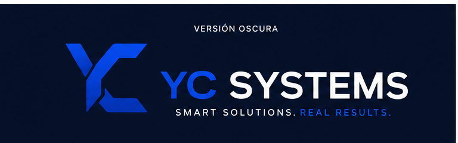

Saltar al contenido

Soluciones
Ecosistema
Casos
Método
Empresa
Solicitar diagnóstico
Error 404
Esta página no está disponible
Puedes volver al inicio, explorar productos o solicitar un diagnóstico.
Volver al inicio
Ver productos